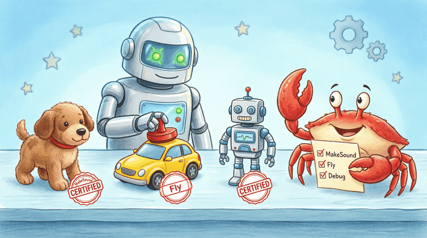
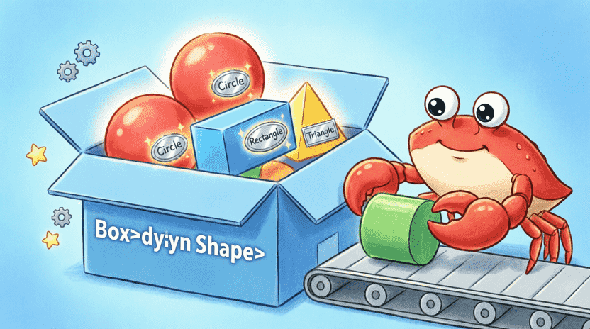
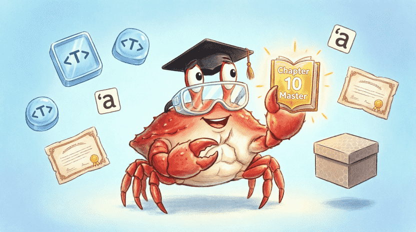

سرزمین راست: ماجراهای فریس خرچنگ فضایی
فصل ۱۰: کارخانهی اسباببازیسازی (Generics و Traits)
📑 فهرست فصل
۱۰.۱. قالب خمیر بازی (Generics)
۱۰.۱.۱. داستان: قالب ستاره و قلب
۱۰.۱.۲. مشکل: کد تکراری برای انواع مختلف
۱۰.۱.۳. معرفی Generics با T
۱۰.۱.۴. Generics در توابع
۱۰.۱.۵. Generics در structها
۱۰.۱.۶. چند نوع Generic
۱۰.۱.۷. Generics در متدها
۱۰.۱.۸. تمرین: struct Container
۱۰.۲. گواهینامهی اسباببازی (Traits)
۱۰.۲.۱. داستان: گواهی صدا داره و پرواز میکنه
۱۰.۲.۲. تعریف Trait
۱۰.۲.۳. پیادهسازی Trait برای یک نوع
۱۰.۲.۴. استفاده از Trait به عنوان پارامتر (Trait Bound)
۱۰.۲.۵. چندین Trait با +
۱۰.۲.۶. بازگشتی با impl Trait
۱۰.۲.۷. Traits پیشساخته (Debug, Clone, PartialEq)
۱۰.۲.۸. تمرین: Trait Area
۱۰.۳. برچسب تاریخ انقضا (Lifetimes – معرفی مختصر)
۱۰.۳.۱. داستان: ماست و تاریخ مصرف
۱۰.۳.۲. مشکل: مرجع به دادهای که از بین رفته
۱۰.۳.۳. نوشتن Lifetime با ’a
۱۰.۳.۴. قوانین حذف Lifetime (Lifetime Elision)
۱۰.۳.۵. Lifetime در structها
۱۰.۳.۶. اشاره به پیوست الف برای مطالعه بیشتر
۱۰.۴. پروژه: کتابخانهی اشکال با Generics و Traits
۱۰.۴.۱. تعریف Trait Shape
۱۰.۴.۲. تعریف struct Circle
۱۰.۴.۳. پیادهسازی Shape برای Circle
۱۰.۴.۴. تعریف struct Rectangle<T, U>
۱۰.۴.۵. استفاده از Trait Object (Box
۱۰.۵. جمعبندی و چالش
۱۰.۵.۱. مرور مفاهیم
۱۰.۵.۲. چالش: تابع largest با Generic و Trait Bound
۱۰.۱. قالب خمیر بازی (Generics)
۱۰.۱.۱. داستان: قالب ستاره و قلب
فریس در کارخانهی اسباببازیسازیاش یک قالب پلاستیکی دارد که شکل ستاره است. 🌟 این قالب فقط یک شکل دارد، اما فریس میتواند خمیر قرمز، آبی، سبز یا حتی خمیر اکلیلی در آن بریزد. نتیجه همیشه یک ستاره است، ولی جنس و رنگش فرق میکند.
در برنامهنویسی هم دقیقاً همین کار را میکنیم. به آن میگویند Generics. یعنی یک کد مینویسیم که با انواع مختلف داده کار کند، بدون اینکه مجبور باشیم برای هر نوع یک کد جداگانه بنویسیم.
👨👩👧 نکته برای والدین و مربیان
Generics و Traits از پیشرفتهترین ویژگیهای Rust هستند. این فصل آنها را آرام معرفی میکند، اما تسلط نیاز به تمرین و زمان دارد. اگر کودک همهچیز را یکباره نفهمید، نگران نباشید – در پروژههای بعدی بارها با آنها روبرو خواهید شد. کتاب رسمی Rust فصل کاملی دربارهی Generics دارد:
doc.rust-lang.org/book/ch10-00-generics.html
۱۰.۱.۲. مشکل: کد تکراری برای انواع مختلف
فرض کن میخواهیم تابعی بنویسیم که بزرگترین عدد را در یک لیست پیدا کند. اگر فقط برای i32 بنویسیم:
#![allow(unused)]
fn main() {
fn largest_i32(list: &[i32]) -> i32 {
let mut largest = list[0];
for &item in list {
if item > largest { largest = item; }
}
largest
}
}حالا اگر بخواهیم همان کار را برای f64 یا char انجام دهیم، باید کل کد را دوباره بنویسیم! این کار هم وقتگیر است، هم پر از باگ. 🥲
۱۰.۱.۳. معرفی Generics با T
به جای کپی کردن کد، از یک حرف جایگزین (معمولاً T به معنی Type) استفاده میکنیم. T مثل یک فضای خالی در فرم است که کامپایلر موقع اجرا، نوع دقیق را در آن میگذارد:
#![allow(unused)]
fn main() {
fn largest<T>(list: &[T]) -> T {
let mut largest = list[0];
for &item in list {
if item > largest { largest = item; } // ❌ اینجا فعلاً خطا میگیریم!
}
largest
}
}⚠️ نکتهی مهم: کامپایلر اینجا خطا میدهد چون نمیداند T اصلاً قابلیت مقایسه (>) دارد یا نه! برای حل این مشکل به Trait نیاز داریم (که در بخش بعد یاد میگیریم). فعلاً برویم سراغ مثالهای سادهتری که نیاز به Trait ندارند.
۱۰.۱.۴. Generics در توابع
یک تابع ساده که هر چیزی به آن بدهی، همان را برمیگرداند:
fn identity<T>(value: T) -> T {
value
}
fn main() {
let x = identity(42); // T اینجا i32 میشود
let y = identity("سلام"); // T اینجا &str میشود
println!("{} و {}", x, y);
}کامپایلر خودش حدس میزند T باید چه نوعی باشد. به این میگویند Type Inference. 🧠
۱۰.۱.۵. Generics در structها
میتوانیم ساختارهایی بسازیم که فیلدهایشان از پیش مشخص نباشند:
struct Point<T> {
x: T,
y: T,
}
fn main() {
let int_point = Point { x: 5, y: 10 }; // Point<i32>
let float_point = Point { x: 1.5, y: 3.2 }; // Point<f64>
}دقت کن که x و y باید همنوع باشند. اگر بخواهیم مختصات با دو نوع مختلف داشته باشیم، باید دو تا T تعریف کنیم.
۱۰.۱.۶. چند نوع Generic
struct Pair<T, U> {
first: T,
second: U,
}
fn main() {
let pair = Pair { first: 42, second: "hello" }; // Pair<i32, &str>
}۱۰.۱.۷. Generics در متدها
وقتی برای یک struct جنریک متد مینویسیم، باید قبل از impl نوع جنریک را اعلام کنیم:
#![allow(unused)]
fn main() {
impl<T> Point<T> {
fn x(&self) -> &T {
&self.x
}
}
}حتی میتوانیم متدی بنویسیم که فقط برای یک نوع خاص از T کار کند:
#![allow(unused)]
fn main() {
impl Point<f64> {
fn distance_from_origin(&self) -> f64 {
(self.x.powi(2) + self.y.powi(2)).sqrt()
}
}
}اینجا distance_from_origin فقط روی Pointهای اعشاری کار میکند، نه روی Point<i32>. خیلی هوشمندانه است! 📐
۱۰.۱.۸. تمرین: struct Container<T>
یک جعبهی جنریک بساز که هر چیزی در آن بگذاری را نگه دارد و با متد get به تو نشان بدهد.
💡 پاسخ:
struct Container<T> {
item: T,
}
impl<T> Container<T> {
fn new(item: T) -> Self {
Container { item }
}
fn get(&self) -> &T {
&self.item
}
}
fn main() {
let c1 = Container::new(42);
let c2 = Container::new(String::from("فریس"));
println!("{} و {}", c1.get(), c2.get());
}![[Illustration: A cartoon workbench with a flexible “mold” labeled <T>. Around it are colorful clay shapes (numbers, letters, emojis) being pressed into the mold, each emerging as a perfectly formed generic toy. Ferris the crab stands beside it holding a blueprint. Style: playful, educational children’s book illustration, bright colors, 16:9.]](assets/images/10.1.png)
۱۰.۲. گواهینامهی اسباببازی (Traits)
۱۰.۲.۱. داستان: گواهی صدا داره و پرواز میکنه
در کارخانهی فریس، هر اسباببازی یک سری «گواهینامه» دارد. مثلاً بعضیها گواهی «صدا داره» (MakeSound) دارند، بعضیها گواهی «پرواز میکند» (Fly). این گواهیها به ما نمیگویند اسباببازی چه شکلی است، میگویند چه کارهایی میتواند انجام بدهد. در Rust به این گواهیها میگوییم Trait. 🏅
۱۰.۲.۲. تعریف Trait
یک Trait فقط لیست کارهایی است که یک نوع باید بلد باشد:
#![allow(unused)]
fn main() {
trait MakeSound {
fn make_sound(&self);
}
}بدنهی تابع را اینجا نمینویسیم. فقط میگوییم «هر کسی این Trait را بگیرد، باید این متد را داشته باشد.»
۱۰.۲.۳. پیادهسازی Trait برای یک نوع
با impl Trait for Type به یک struct یا enum میگوییم حالا دیگر این گواهینامه را دارد:
#![allow(unused)]
fn main() {
struct Dog { name: String }
impl MakeSound for Dog {
fn make_sound(&self) {
println!("{} میگوید: هاپ! هاپ!", self.name);
}
}
struct Car;
impl MakeSound for Car {
fn make_sound(&self) {
println!("بوق بوق!");
}
}
}حالا Dog و Car هر دو MakeSound هستند، ولی هر کدام به روش خودش صدا درمیآورند!
۱۰.۲.۴. استفاده از Trait به عنوان پارامتر (Trait Bound)
میتوانیم تابعی بنویسیم که به جای نوع دقیق، بگوید «هر چیزی که این Trait را داشته باشد قبول میکنم»:
#![allow(unused)]
fn main() {
fn notify(item: &impl MakeSound) {
item.make_sound();
}
}یا شکل کلاسیکتر (Trait Bound):
#![allow(unused)]
fn main() {
fn notify<T: MakeSound>(item: &T) {
item.make_sound();
}
}هر دو یکی هستند. دومی زمانی خوب است که چند تا پارامتر جنریک دارید و میخواهید شرطهایشان را جدا بنویسید.
۱۰.۲.۵. چندین Trait با +
اگر یک نوع باید چند تا گواهینامه همزمان داشته باشد، از + استفاده میکنیم:
#![allow(unused)]
fn main() {
fn fly_and_sound(item: &(impl MakeSound + Fly)) {
item.make_sound();
item.fly();
}
}۱۰.۲.۶. بازگشتی با impl Trait
میتوانیم تابعی بنویسیم که خروجیاش یک نوع مجهول ولی دارای یک Trait خاص باشد:
#![allow(unused)]
fn main() {
fn get_sound_maker() -> impl MakeSound {
Dog { name: String::from("بلا") }
}
}این خیلی کاربرد دارد وقتی نوع برگشتی خیلی پیچیده است یا نمیخواهیم کاربر دقیقاً بداند پشت پرده چیست. فقط میداند «صدا میدهد»! 🔊
۱۰.۲.۷. Traits پیشساخته (Debug, Clone, PartialEq)
Rust چند تا Trait آماده دارد که با یک خط #[derive(...)] خودکار برایتان میسازد:
| Trait | کاربرد | مثال |
|---|---|---|
Debug | چاپ دیباگ با {:?} | println!("{:?}", obj); |
Clone | کپی صریح با .clone() | let copy = original.clone(); |
Copy | کپی خودکار (فقط برای انواع ساده) | let x = 5; let y = x; |
PartialEq | مقایسه با == و != | if a == b { ... } |
مثال:
#[derive(Debug, Clone, PartialEq)]
struct Monster { name: String, power: u32 }
fn main() {
let m1 = Monster { name: String::from("دودو"), power: 100 };
let m2 = m1.clone();
println!("{:?}", m1); // چاپ خوشگل
println!("برابرند؟ {}", m1 == m2); // true
}۱۰.۲.۸. تمرین: Trait Area
یک Trait بساز که مساحت را حساب کند. دو شکل مختلف برای آن بنویس و جمع مساحتشان را حساب کن.
💡 پاسخ نمونه:
#![allow(unused)]
fn main() {
trait Area {
fn area(&self) -> f64;
}
struct Circle { radius: f64 }
impl Area for Circle {
fn area(&self) -> f64 {
std::f64::consts::PI * self.radius * self.radius
}
}
struct Rectangle { width: f64, height: f64 }
impl Area for Rectangle {
fn area(&self) -> f64 { self.width * self.height }
}
fn total_area(shapes: &[&dyn Area]) -> f64 {
shapes.iter().map(|s| s.area()).sum()
}
}
۱۰.۳. برچسب تاریخ انقضا (Lifetimes – معرفی مختصر)
۱۰.۳.۱. داستان: ماست و تاریخ مصرف
وقتی ماست میخری، یک تاریخ انقضا روی آن است. تا آن تاریخ معتبر است، بعدش خراب میشود. در Rust هم وقتی یک مرجع (Reference) میسازیم، یک «تاریخ انقضا» دارد به اسم Lifetime (طول عمر). این تاریخ میگوید مرجع ما تا کجای برنامه زنده و معتبر است. ⏳
🧠 گاهی بعضی چیزها سخت است، و این اشکالی ندارد!
Lifetimes یکی از خاصترین مفاهیم Rust است. حتی برنامهنویسان باتجربه هم گاهی برایشان چالش برانگیز است. اگر الان متوجه نشدی، نگران نباش – در ۹۵٪ مواقع نیازی نیست خودت آن را بنویسی و کامپایلر Rust همهچیز را برایت مدیریت میکند.
۱۰.۳.۲. مشکل: مرجع به دادهای که از بین رفته
#![allow(unused)]
fn main() {
let r;
{
let x = 5;
r = &x;
} // x اینجا میمیرد و حافظهاش پاک میشود
println!("{}", r); // ❌ خطا! r به یک جای خالی اشاره میکند
}کامپایلر Rust این را میبیند و اجازه نمیدهد برنامه کامپایل شود. این یکی از دلایل اصلی است که Rust «امنترین» زبان دنیاست! 🛡️
۱۰.۳.۳. نوشتن Lifetime با 'a
گاهی کامپایلر گیج میشود که خروجی یک تابع به کدام ورودی وصل است. با 'a به او کمک میکنیم:
#![allow(unused)]
fn main() {
fn longest<'a>(x: &'a str, y: &'a str) -> &'a str {
if x.len() > y.len() { x } else { y }
}
}یعنی: «خروجی تابع دقیقاً به اندازهای زنده میماند که کوتاهترین ورودی (x یا y) زنده باشد.» اینطوری کامپایلر خیالش راحت میشود که هیچ وقت به دادهی مرده اشاره نمیکنیم.
۱۰.۳.۴. قوانین حذف Lifetime (Lifetime Elision)
خبر خوب: در ۹۵٪ مواقع لازم نیست 'a بنویسی! Rust سه قانون ساده دارد که خودش حدس میزند:
۱. هر پارامتر مرجع، یک Lifetime مخفی جداگانه میگیرد.
۲. اگر فقط یک پارامتر مرجع ورودی داشته باشیم، خروجی همان Lifetime را میگیرد.
۳. اگر چند پارامتر مرجع داشته باشیم و یکی از آنها &self یا &mut self باشد، خروجی Lifetime خود self را میگیرد.
پس توابعی مثل fn first_word(s: &str) -> &str یا متدهای معمولی نیاز به 'a ندارند. ✨
۱۰.۳.۵. Lifetime در structها
اگر یک struct بخواهد یک مرجع را نگه دارد، باید Lifetime را در تعریفش بنویسیم:
struct Excerpt<'a> {
part: &'a str,
}
fn main() {
let novel = String::from("داستان بلند...");
let first_sentence = novel.split('.').next().unwrap();
let excerpt = Excerpt { part: first_sentence };
println!("{}", excerpt.part);
}اینطوری کامپایلر میداند تا وقتی excerpt زنده است، novel هم باید زنده بماند تا part خراب نشود.
۱۰.۳.۶. اشاره به پیوست الف برای مطالعه بیشتر
فعلاً نگران Lifetimes نباش! کافی است بدانی اینها مثل چسبهای ایمنی هستند که مطمئن میشوند هیچ مرجعی به دادهی پاکشده اشاره نمیکند. در بقیهی کتاب، Rust بیشتر کارها را خودش انجام میدهد. اگر کنجکاو هستی، میتوانی به «پیوست الف: ماجرای برچسبهای رنگی» مراجعه کنی. 📖
![[Illustration: Cartoon illustration of a yogurt cup labeled “&’a str” with a glowing expiration date sticker. A friendly compiler robot checks the sticker with a magnifying glass, giving a green checkmark. Ferris stands nearby pointing at the safety seal. Style: educational, playful, soft lighting, 16:9.]](assets/images/10.3.png)
۱۰.۴. پروژه: کتابخانهی اشکال با Generics و Traits
بیا یک کتابخانهی کوچک ولی حرفهای بسازیم که هر شکلی را بگیرد و مساحت و محیطش را حساب کند. 📐🔺🟦
۱۰.۴.۱. تعریف Trait Shape
#![allow(unused)]
fn main() {
trait Shape {
fn area(&self) -> f64;
fn perimeter(&self) -> f64;
}
}۱۰.۴.۲. تعریف struct Circle<T>
#![allow(unused)]
fn main() {
struct Circle<T> {
radius: T,
}
}۱۰.۴.۳. پیادهسازی Shape برای Circle<T>
چون فرمولها به f64 نیاز دارند، باید مطمئن شویم T میتواند به f64 تبدیل شود. از where استفاده میکنیم:
#![allow(unused)]
fn main() {
use std::f64::consts::PI;
impl<T> Shape for Circle<T>
where
T: Into<f64> + Copy,
{
fn area(&self) -> f64 {
let r: f64 = self.radius.into();
PI * r * r
}
fn perimeter(&self) -> f64 {
let r: f64 = self.radius.into();
2.0 * PI * r
}
}
}where یعنی «شرطهای لازم برای T این است: بتواند به f64 تبدیل شود و کپی شود.»
۱۰.۴.۴. تعریف struct Rectangle<T, U>
#![allow(unused)]
fn main() {
struct Rectangle<T, U> { width: T, height: U }
impl<T, U> Shape for Rectangle<T, U>
where
T: Into<f64> + Copy,
U: Into<f64> + Copy,
{
fn area(&self) -> f64 {
let w: f64 = self.width.into();
let h: f64 = self.height.into();
w * h
}
fn perimeter(&self) -> f64 {
2.0 * (self.width.into() + self.height.into())
}
}
}۱۰.۴.۵. استفاده از Trait Object (Box<dyn Shape>)
حالا میخواهیم یک لیست داشته باشیم که در آن هم دایره باشد هم مستطیل. چون اندازهشان فرق دارد، نمیتوانیم مستقیم در آرایه بگذاریمشان. راه حل؟ Trait Object!
fn main() {
let circle = Circle { radius: 3.0 };
let rect = Rectangle { width: 4.0, height: 5.0 };
let shapes: Vec<Box<dyn Shape>> = vec![
Box::new(circle),
Box::new(rect),
];
for shape in shapes {
println!("مساحت: {:.2}, محیط: {:.2}", shape.area(), shape.perimeter());
}
}dyn Shape یعنی «در این جعبه، هر چیزی که Trait Shape را داشته باشد میتوانی بگذاری». Box هم آن را به حافظهی پویا (heap) میبرد تا اندازهاش مهم نباشد. اینطوری میتوانیم اشکال مختلف را در یک لیست نگه داریم و یکجا روی همانها حلقه بزنیم! 🎉

۱۰.۵. جمعبندی و چالش
۱۰.۵.۱. مرور مفاهیم
در این فصل یاد گرفتی:
✅ Generics (<T>): نوشتن کد قابل استفاده برای انواع مختلف بدون تکرار.
✅ Traits: تعریف رفتار مشترک (مثل MakeSound یا Shape).
✅ Trait Bounds (T: Trait): محدود کردن نوع جنریک به آنهایی که یک Trait را پیادهسازی کردهاند.
✅ impl Trait: سادهسازی پارامترها و خروجیها.
✅ Lifetimes ('a): تضمین ایمنی مرجعها با تعیین طول عمر مشترک (معرفی مختصر).
✅ Trait Objects (Box<dyn Trait>): ذخیرهسازی انواع مختلف با رفتار مشترک در یک کالکشن واحد.
✅ جادوگر کامپیوتر بودن یعنی بتوانی کدهای همهکاره و قابل استفاده مجدد بنویسی – Generics و Traits این قدرت را به تو میدهند. 🧙
۱۰.۵.۲. چالش: تابع largest با Generic و Trait Bound
یادت میآید اول فصل تابع largest خطا میداد؟ حالا با استفاده از Trait PartialOrd (که قابلیت مقایسه > را میدهد) و Copy، تابع را کامل کن تا برای هر slice ای از انواع قابل مقایسه کار کند.
💡 پاسخ:
fn largest<T: PartialOrd + Copy>(list: &[T]) -> T {
let mut largest = list[0];
for &item in list {
if item > largest { largest = item; }
}
largest
}
fn main() {
let numbers = vec![34, 50, 25, 100, 65];
println!("بزرگترین عدد: {}", largest(&numbers));
let chars = vec!['ی', 'م', 'ا', 'ق'];
println!("بزرگترین حرف: {}", largest(&chars));
}حالا تو میدانی چطور کدهای همهکاره با Generics بنویسی و رفتار مشترک را با Traits تعریف کنی. همچنین یک نگاه کوتاه به Lifetimes انداختی و فهمیدی چطور Rust امنیت حافظه را تضمین میکند. 🛡️
در فصل بعد، یاد میگیریم چطور با تستنویسی مطمئن شویم برنامهمان همیشه درست کار میکند، درست مثل آزمایش سفینه قبل از پرتاب! 🚀🧪
